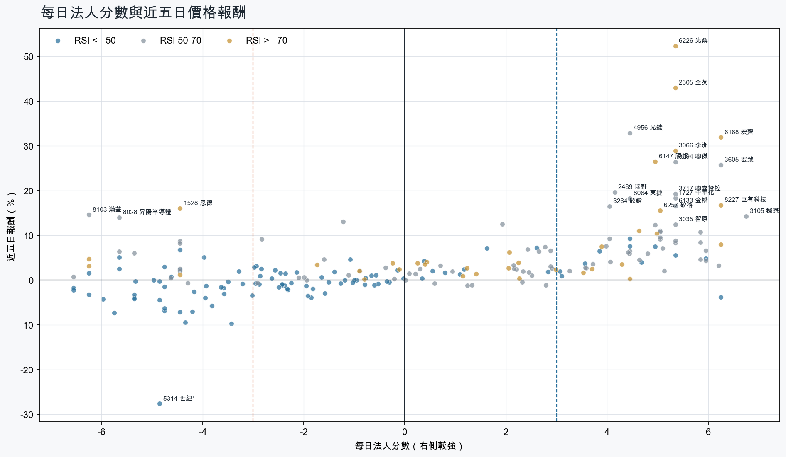
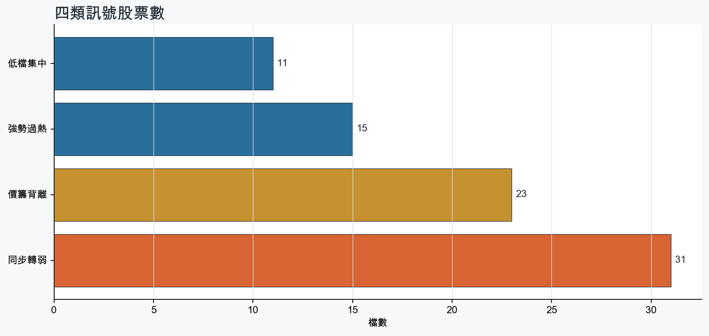
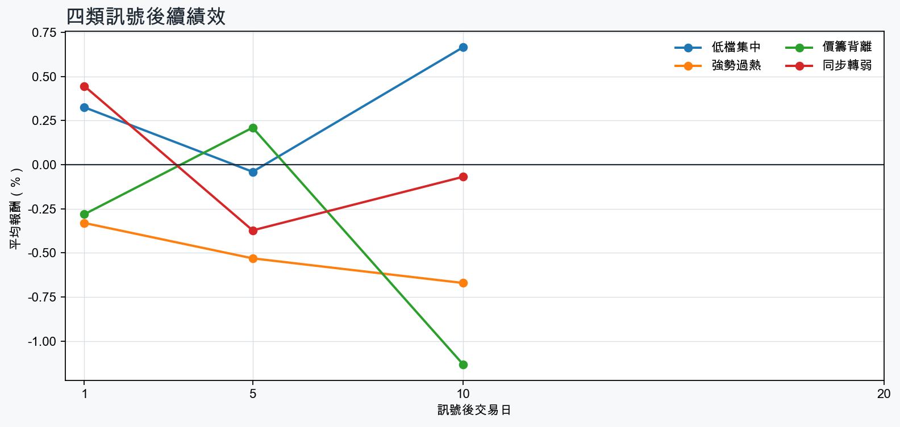

市場情緒中性分歧
近5日法人合計-1,598,353 張
篩選池上漲比例70.5%
籌碼好 / RSI低11 檔
籌碼差 / 價跌15 檔



EPS × PE VALUATION
法人常用的相對估值
顯示保守、基準與樂觀估值帶，不把單一數字包裝成精準目標價。
最新累計 EPS 依季數年化 × 同產業有效 P/E 的 Q25／中位數／Q75。排除本公司、非正 P/E，並以 1.5×IQR 排除離群值。估值帶是公開資料篩選值，不是法人目標價；未使用分析師預估 EPS。
MOOD × MONEY
情緒與籌碼雷達
熱度代表被討論程度；情緒分與法人方向分開計算。熱門不等於適合追價，樣本不足也不硬判多空。
| 股票 | 情緒 | 討論熱度 | 情緒 × 籌碼 | 情緒 × 基本面 |
|---|---|---|---|---|
| 8358 金居價籌背離 | 中性分歧 +11.4信心 100 | 1002 篇 / 129 留言 / 3 則新聞 | 高熱分歧法人分 -4.8 | 基本面與情緒分歧基本面分 +3.6 |
| 8299 群聯低檔集中 | 情緒高漲 +43.3信心 94 | 991 篇 / 125 留言 / 3 則新聞 | 情籌共振法人分 +5.0 | 基本面與情緒共振基本面分 +3.6 |
| 2408 南亞科低檔集中 | 中性分歧 +0.0信心 92 | 872 篇 / 57 留言 / 3 則新聞 | 高熱分歧法人分 +3.9 | 基本面與情緒分歧基本面分 +3.6 |
| 6669 緯穎同步轉弱 | 偏空 -24.9信心 80 | 841 篇 / 52 留言 / 3 則新聞 | 情籌雙弱法人分 -5.8 | 基本面佳、情緒悲觀基本面分 +3.0 |
| 3081 聯亞價籌背離 | 中性分歧 -10.6信心 67 | 761 篇 / 29 留言 / 3 則新聞 | 高熱分歧法人分 -5.7 | 基本面與情緒分歧基本面分 +3.6 |
| 8227 巨有科技強勢過熱 | 情緒高漲 +36.7信心 72 | 711 篇 / 19 留言 / 3 則新聞 | 情籌共振法人分 +6.2 | 基本面與情緒共振基本面分 +3.0 |
| 3045 台灣大強勢過熱 | 中性分歧 +0.0信心 52 | 702 篇 / 17 留言 / 1 則新聞 | 高熱分歧法人分 +3.7 | 基本面與情緒分歧基本面分 +2.4 |
| 2305 全友強勢過熱 | 中性分歧 +8.4信心 60 | 661 篇 / 12 留言 / 3 則新聞 | 高熱分歧法人分 +5.3 | 基本面與情緒分歧基本面分 +3.6 |
| 5314 世紀*同步轉弱 | 偏空 -34.0信心 56 | 661 篇 / 12 留言 / 3 則新聞 | 情籌雙弱法人分 -4.8 | 基本面佳、情緒悲觀基本面分 +3.6 |
| 3376 新日興同步轉弱 | 中性分歧 +0.0信心 30 | 460 篇 / 0 留言 / 3 則新聞 | 情籌混合法人分 -6.5 | 基本面與情緒分歧基本面分 -1.8 |
| 2388 威盛同步轉弱 | 偏空 -29.7信心 30 | 460 篇 / 0 留言 / 3 則新聞 | 情籌雙弱法人分 -4.2 | 基本面佳、情緒悲觀基本面分 +1.8 |
| 4958 臻鼎-KY同步轉弱 | 中性分歧 +0.0信心 30 | 460 篇 / 0 留言 / 3 則新聞 | 情籌混合法人分 -4.8 | 基本面與情緒分歧基本面分 +3.0 |
01
籌碼好 / RSI低
優先研究基本面；法人續買且價格止穩時，才適合分批觀察。
| 股票 / 確認狀態 | 每日法人分 | 浦男式近似 | 法人加速度 | RSI / 相對強弱 | 量價確認 | 融資融券 | 每週集保確認 | 基本面 | EPS × 同業 P/E 估值 | 情緒 / 情籌 | 近期消息 | 論壇討論 |
|---|---|---|---|---|---|---|---|---|---|---|---|---|
| 3042 晶技等待確認 · 91 分籌碼有訊號，但價格尚未確認 | +6.0法人 +10,302 張 / 5 天 | 接近 · 75站上月線；法人籌碼偏多；法人買盤加速；留意中期均線未翻多、明顯弱於大盤 | +3,173 張近3日 +6,727 / 連續 +5 日 | 49.2相對大盤 -7.2% | 量比 0.91確認分 +2.720日線低於60日線；近20日弱於大盤 | -%融資 - 張 / 融券 - 張 | -3.32 pp1000張 -2.46 pp | 單月營收年增 +23.5%；累計營收年增 +11.7%；2026 Q2 累計 EPS 2.96仍需觀察下一期財報延續性來源：公開資訊觀測站 | 基準 NT$ 155.4估值帶 106.4–267.9現價 184.5 · 估值帶內 · 距基準 -15.8%2026 Q2 累計 EPS 2.96 → 年化 5.92電子零組件同業 P/E 17.98／26.25／45.26 · n=150 · 信心中等以 Q2 累計 EPS 年化，不等同分析師全年預估來源：TWSE／TPEx 每日本益比 | 偏多 +29.7熱度 46 / 信心 30情籌共振 | AI動能強勁，晶技光模塊訂單能見度達明年上半年- 新聞MoneyDJ · 09/16晶技（3042）毛利率為何回升？不是靠漲價，AI、光通訊成關鍵！｜股市話題｜豐雲學堂2026 年 09 月sinotrade.com.tw · 08/26 | 近期沒有明確提及本股的論壇樣本 |
| 2408 南亞科可研究 · 88 分籌碼與價格確認，可列研究清單 | +3.9法人 +25,047 張 / 3 天 | 接近 · 85站上月線；中期均線偏多；法人籌碼偏多；留意明顯弱於大盤 | +81,363 張近3日 +46,495 / 連續 +3 日 | 46.4相對大盤 -4.9% | 量比 1.21確認分 +3.3近20日弱於大盤 | -%融資 - 張 / 融券 - 張 | -0.88 pp1000張 -1.48 pp | 單月營收年增 +560.9%；累計營收年增 +638.2%；2026 Q2 累計 EPS 23.38仍需觀察下一期財報延續性來源：公開資訊觀測站 | 基準 NT$ 1,270估值帶 845.0–2,158現價 525.0 · 低於估值帶 · 距基準 +142.0%2026 Q2 累計 EPS 23.38 → 年化 46.76半導體同業 P/E 18.07／27.17／46.16 · n=149 · 信心中等以 Q2 累計 EPS 年化，不等同分析師全年預估來源：TWSE／TPEx 每日本益比 | 中性分歧 +0.0熱度 87 / 信心 92高熱分歧 | 三大法人買賣超– 外資買超(2408)南亞科、(2330)台積電，投信買超(6446)藥華藥、(2408)南亞科，法人合計買超1165.87億元(0918)｜豐雲學堂2026 年 09 月sinotrade.com.tw · 09/18台股狂漲809點！記憶體大漲回血「南亞科、華邦電、群聯噴半根」 IC設計聯傑、精拓科齊亮燈Yahoo股市 · 09/18 | [情報] 2323 中環 買南亞科,賣聯亞賠6,981,622元PTT Stock · 09-15 · 29 留言[情報] 2323 中環 買國巨、智邦，賣南亞科 賺PTT Stock · 09-16 · 28 留言 |
| 8299 群聯可研究 · 92 分籌碼與價格確認，可列研究清單 | +5.0法人 +2,412 張 / 3 天 | 接近 · 89站上月線；中期均線偏多；法人籌碼偏多；留意相對強度普通 | +3,189 張近3日 +2,546 / 連續 +1 日 | 48.2相對大盤 -1.2% | 量比 1.69確認分 +4.2價格、量能與籌碼未見明顯弱項 | +0.1%融資 +7 張 / 融券 +6 張 | -4.08 pp1000張 -6.87 pp | 單月營收年增 +376.5%；累計營收年增 +279.0%；2026 Q2 累計 EPS 187.43仍需觀察下一期財報延續性來源：公開資訊觀測站 | 基準 NT$ 10,185估值帶 6,916–17,304現價 2,140 · 低於估值帶 · 距基準 +375.9%2026 Q2 累計 EPS 187.4 → 年化 374.9半導體同業 P/E 18.45／27.17／46.16 · n=149 · 信心中等以 Q2 累計 EPS 年化，不等同分析師全年預估來源：TWSE／TPEx 每日本益比 | 情緒高漲 +43.3熱度 99 / 信心 94情籌共振 | 台股狂漲809點！記憶體大漲回血「南亞科、華邦電、群聯噴半根」 IC設計聯傑、精拓科齊亮燈Yahoo股市 · 09/188299群聯｜利多滿天飛，更要懂得下車！CMoney · 09/18 | [新聞] 百工百業挺國旅 群聯砸1億元、加碼一個PTT Stock · 09-16 · 125 留言 |
| 2393 億光等待確認 · 79 分籌碼有訊號，但價格尚未確認 | +3.6法人 +1,894 張 / 4 天 | 接近 · 71站上月線；法人籌碼偏多；法人買盤加速；留意中期均線未翻多、明顯弱於大盤 | +2,007 張近3日 +1,980 / 連續 +3 日 | 41.7相對大盤 -4.8% | 量比 1.96確認分 +1.820日線低於60日線；近20日弱於大盤 | -%融資 - 張 / 融券 - 張 | -0.22 pp1000張 -0.78 pp | 單月營收年增 +14.1%；累計營收年增 +6.3%；2026 Q2 累計 EPS 2.14仍需觀察下一期財報延續性來源：公開資訊觀測站 | 基準 NT$ 110.8估值帶 54.91–157.7現價 64.40 · 估值帶內 · 距基準 +72.1%2026 Q2 累計 EPS 2.14 → 年化 4.28光電同業 P/E 12.83／25.90／36.84 · n=68 · 信心中等以 Q2 累計 EPS 年化，不等同分析師全年預估來源：TWSE／TPEx 每日本益比 | 樣本不足 +0.0熱度 0 / 信心 0情緒樣本不足 | 近期沒有通過股票語境篩選的新聞 | 近期沒有明確提及本股的論壇樣本 |
| 2377 微星可研究 · 86 分籌碼與價格確認，可列研究清單 | +4.7法人 +5,970 張 / 4 天 | 命中 · 87站上月線；中期均線偏多；法人籌碼偏多；留意量能尚未確認、基本面中性 | +878 張近3日 +4,639 / 連續 +3 日 | 50.0相對大盤 +5.2% | 量比 0.75確認分 +4.3價格、量能與籌碼未見明顯弱項 | -%融資 - 張 / 融券 - 張 | -2.60 pp1000張 -2.78 pp | 2026 Q2 累計 EPS 7.59單月營收年增 -6.1%；累計營收年增 -6.4%；2026 Q2 累計營益率 6.7%來源：公開資訊觀測站 | 基準 NT$ 248.7估值帶 188.7–369.9現價 155.0 · 低於估值帶 · 距基準 +60.4%2026 Q2 累計 EPS 7.59 → 年化 15.18電腦及週邊同業 P/E 12.43／16.38／24.37 · n=79 · 信心中等以 Q2 累計 EPS 年化，不等同分析師全年預估來源：TWSE／TPEx 每日本益比 | 樣本不足 +0.0熱度 0 / 信心 0情緒樣本不足 | 近期沒有通過股票語境篩選的新聞 | 近期沒有明確提及本股的論壇樣本 |
| 1529 樂事綠能等待確認 · 73 分籌碼有訊號，但價格尚未確認 | +6.2法人 +1,918 張 / 5 天 | 未命中 · 46法人籌碼偏多；法人買盤加速；買超具延續性；留意未站月線、中期均線未翻多 | +1,837 張近3日 +1,870 / 連續 +5 日 | 21.5相對大盤 -15.7% | 量比 2.04確認分 -1.0收盤跌破20日線；20日線低於60日線；近20日弱於大盤；流動性偏低 | -%融資 - 張 / 融券 - 張 | +0.02 pp1000張 +0.99 pp | 單月營收年增 +8.0%；2026 Q2 累計 EPS 0.50；2026 Q2 累計營益率 10.3%累計營收年增 -14.9%來源：公開資訊觀測站 | 基準 NT$ 20.34估值帶 13.86–32.40現價 15.25 · 估值帶內 · 距基準 +33.4%2026 Q2 累計 EPS 0.50 → 年化 1.00電機機械同業 P/E 13.86／20.34／32.40 · n=72 · 信心中等以 Q2 累計 EPS 年化，不等同分析師全年預估來源：TWSE／TPEx 每日本益比 | 樣本不足 +0.0熱度 0 / 信心 0情緒樣本不足 | 近期沒有通過股票語境篩選的新聞 | 近期沒有明確提及本股的論壇樣本 |
| 1718 中纖等待確認 · 63 分籌碼有訊號，但價格尚未確認 | +3.1法人 +11,063 張 / 3 天 | 未命中 · 56法人籌碼偏多；法人買盤加速；買超具延續性；留意未站月線、中期均線未翻多 | +8,890 張近3日 +8,712 / 連續 -1 日 | 45.0相對大盤 -5.3% | 量比 0.79確認分 -1.1收盤跌破20日線；20日線低於60日線；近20日弱於大盤 | -%融資 - 張 / 融券 - 張 | +1.17 pp1000張 +1.06 pp | 單月營收年增 +4.4%；累計營收年增 +3.3%；2026 Q2 累計 EPS 0.46仍需觀察下一期財報延續性來源：公開資訊觀測站 | 基準 NT$ 17.88估值帶 12.13–22.95現價 10.60 · 低於估值帶 · 距基準 +68.6%2026 Q2 累計 EPS 0.46 → 年化 0.92化學工業同業 P/E 13.19／19.43／24.95 · n=32 · 信心中等以 Q2 累計 EPS 年化，不等同分析師全年預估來源：TWSE／TPEx 每日本益比 | 樣本不足 +0.0熱度 0 / 信心 0情緒樣本不足 | 近期沒有通過股票語境篩選的新聞 | 近期沒有明確提及本股的論壇樣本 |
| 8261 富鼎等待確認 · 73 分籌碼有訊號，但價格尚未確認 | +4.5法人 +2,211 張 / 3 天 | 接近 · 71站上月線；法人籌碼偏多；法人買盤加速；留意中期均線未翻多、明顯弱於大盤 | +1,032 張近3日 +1,698 / 連續 +1 日 | 48.9相對大盤 -4.6% | 量比 1.43確認分 +1.920日線低於60日線；近20日弱於大盤 | -%融資 - 張 / 融券 - 張 | -8.25 pp1000張 -5.73 pp | 累計營收年增 +6.8%；2026 Q2 累計 EPS 3.07；2026 Q2 累計營益率 23.9%單月營收年增 -3.0%來源：公開資訊觀測站 | 基準 NT$ 166.8估值帶 111.0–283.4現價 177.0 · 估值帶內 · 距基準 -5.8%2026 Q2 累計 EPS 3.07 → 年化 6.14半導體同業 P/E 18.07／27.17／46.16 · n=149 · 信心中等以 Q2 累計 EPS 年化，不等同分析師全年預估來源：TWSE／TPEx 每日本益比 | 樣本不足 +0.0熱度 0 / 信心 0情緒樣本不足 | 近期沒有通過股票語境篩選的新聞 | 近期沒有明確提及本股的論壇樣本 |
| 5425 台半等待確認 · 64 分籌碼有訊號，但價格尚未確認 | +4.5法人 +4,154 張 / 3 天 | 接近 · 68站上月線；法人籌碼偏多；買超具延續性；留意中期均線未翻多、法人買盤未加速 | -94 張近3日 +1,814 / 連續 -2 日 | 45.8相對大盤 +0.7% | 量比 0.48確認分 -0.620日線低於60日線；成交量不足；法人買盤減速 | -0.1%融資 -10 張 / 融券 -98 張 | -3.56 pp1000張 -3.26 pp | 單月營收年增 +22.4%；累計營收年增 +7.5%；2026 Q2 累計 EPS 1.52仍需觀察下一期財報延續性來源：公開資訊觀測站 | 基準 NT$ 81.81估值帶 54.93–140.3現價 92.60 · 估值帶內 · 距基準 -11.7%2026 Q2 累計 EPS 1.52 → 年化 3.04半導體同業 P/E 18.07／26.91／46.16 · n=149 · 信心中等以 Q2 累計 EPS 年化，不等同分析師全年預估來源：TWSE／TPEx 每日本益比 | 樣本不足 +0.0熱度 28 / 信心 10情緒樣本不足 | 1圖PK》台半、德微、強茂...功率半導體3雄漲停還能追？專家揭4指標、3看點：擺脫AI題材股- 上市櫃旺得富理財網 · 09/17 | 近期沒有明確提及本股的論壇樣本 |
| 2385 群光等待確認 · 56 分先等基本面止穩 | +3.1法人 +2,205 張 / 5 天 | 未命中 · 53中期均線偏多；法人籌碼偏多；買超具延續性；留意未站月線、法人買盤未加速 | -373 張近3日 +1,330 / 連續 +6 日 | 48.7相對大盤 -4.3% | 量比 2.20確認分 -1.2收盤跌破20日線；近20日弱於大盤；法人買盤減速 | -%融資 - 張 / 融券 - 張 | +0.31 pp1000張 +0.03 pp | 2026 Q2 累計 EPS 5.06單月營收年增 -23.1%；累計營收年增 -8.5%；2026 Q2 累計營益率 5.0%來源：公開資訊觀測站 | 基準 NT$ 268.2估值帶 183.6–458.0現價 106.0 · 低於估值帶 · 距基準 +153.0%2026 Q2 累計 EPS 5.06 → 年化 10.12電子零組件同業 P/E 18.14／26.50／45.26 · n=150 · 信心中等以 Q2 累計 EPS 年化，不等同分析師全年預估來源：TWSE／TPEx 每日本益比 | 樣本不足 +0.0熱度 0 / 信心 0情緒樣本不足 | 近期沒有通過股票語境篩選的新聞 | 近期沒有明確提及本股的論壇樣本 |
| 2484 希華等待確認 · 39 分籌碼有訊號，但價格尚未確認 | +5.3法人 +2,176 張 / 4 天 | 未命中 · 44法人籌碼偏多；買超具延續性；基本面有支撐；留意未站月線、中期均線未翻多 | -597 張近3日 +947 / 連續 -1 日 | 41.9相對大盤 -12.3% | 量比 0.42確認分 -6.3收盤跌破20日線；20日線低於60日線；近20日弱於大盤；成交量不足；法人買盤減速 | -%融資 - 張 / 融券 - 張 | -4.03 pp1000張 -4.99 pp | 單月營收年增 +25.1%；累計營收年增 +1.7%；2026 Q2 累計 EPS 0.86仍需觀察下一期財報延續性來源：公開資訊觀測站 | 基準 NT$ 45.15估值帶 30.93–75.16現價 70.40 · 估值帶內 · 距基準 -35.9%2026 Q2 累計 EPS 0.86 → 年化 1.72電子零組件同業 P/E 17.98／26.25／43.70 · n=150 · 信心中等以 Q2 累計 EPS 年化，不等同分析師全年預估來源：TWSE／TPEx 每日本益比 | 樣本不足 +0.0熱度 0 / 信心 0情緒樣本不足 | 近期沒有通過股票語境篩選的新聞 | 近期沒有明確提及本股的論壇樣本 |
02
籌碼好 / RSI高
趨勢強但不追價，等待量縮、RSI降溫或回測支撐。
| 股票 / 確認狀態 | 每日法人分 | 浦男式近似 | 法人加速度 | RSI / 相對強弱 | 量價確認 | 融資融券 | 每週集保確認 | 基本面 | EPS × 同業 P/E 估值 | 情緒 / 情籌 | 近期消息 | 論壇討論 |
|---|---|---|---|---|---|---|---|---|---|---|---|---|
| 6226 光鼎等待拉回 · 100 分等拉回，不追價 | +5.3法人 +12,482 張 / 4 天 | 接近 · 82站上月線；中期均線偏多；法人籌碼偏多；留意量能異常、動能位置非最佳 | +4,531 張近3日 +5,652 / 連續 +2 日 | 72.5相對大盤 +111.2% | 量比 4.31確認分 +5.3價格、量能與籌碼未見明顯弱項 | -%融資 - 張 / 融券 - 張 | +11.99 pp1000張 +7.28 pp | 單月營收年增 +13.1%；累計營收年增 +7.1%；2026 Q2 累計 EPS 0.032026 Q2 累計營益率 -4.1%來源：公開資訊觀測站 | 基準 NT$ 1.55估值帶 0.77–2.21現價 45.70 · 高於估值帶 · 距基準 -96.6%2026 Q2 累計 EPS 0.03 → 年化 0.06光電同業 P/E 12.85／25.90／36.78 · n=69 · 信心較低以 Q2 累計 EPS 年化，不等同分析師全年預估；交易所無有效本益比，無法交叉檢核近四季 EPS來源：TWSE／TPEx 每日本益比 | 中性分歧 +0.0熱度 46 / 信心 30情籌混合 | 2檔「抓去關」新名單 光鼎、晉泰9／21起處置ETtoday財經雲 · 09/186226 光鼎- 上市股價漲幅一週以來排行- 股市爆料同學會CMoney · 09/18 | 近期沒有明確提及本股的論壇樣本 |
| 2303 聯電等待拉回 · 100 分等拉回，不追價 | +4.6法人 +87,449 張 / 4 天 | 接近 · 86站上月線；法人籌碼偏多；法人買盤加速；留意中期均線未翻多、動能位置非最佳 | +85,460 張近3日 +86,467 / 連續 +3 日 | 70.5相對大盤 +29.6% | 量比 1.61確認分 +6.520日線低於60日線 | -%融資 - 張 / 融券 - 張 | +0.84 pp1000張 +0.68 pp | 單月營收年增 +30.7%；累計營收年增 +14.7%；2026 Q2 累計 EPS 4.68仍需觀察下一期財報延續性來源：公開資訊觀測站 | 基準 NT$ 254.3估值帶 169.1–432.1現價 156.0 · 低於估值帶 · 距基準 +63.0%2026 Q2 累計 EPS 4.68 → 年化 9.36半導體同業 P/E 18.07／27.17／46.16 · n=149 · 信心中等以 Q2 累計 EPS 年化，不等同分析師全年預估來源：TWSE／TPEx 每日本益比 | 偏空 -29.7熱度 46 / 信心 30法人布局、市場悲觀 | 【09:09 即時新聞】聯傑(3094)攻上漲停，受聯電集團題材帶動走強CMoney投資網誌 · 09/18聯電ADR狂飆8.6%+三大法人連買力挺 股價強漲挑戰160元關卡經濟日報 · 09/18 | 近期沒有明確提及本股的論壇樣本 |
| 4961 天鈺等待拉回 · 100 分等拉回，不追價 | +6.2法人 +2,359 張 / 5 天 | 命中 · 96站上月線；中期均線偏多；法人籌碼偏多；留意動能位置非最佳 | +139 張近3日 +1,383 / 連續 +6 日 | 73.9相對大盤 +6.2% | 量比 1.32確認分 +5.5價格、量能與籌碼未見明顯弱項 | -%融資 - 張 / 融券 - 張 | +0.22 pp1000張 +0.89 pp | 單月營收年增 +50.2%；累計營收年增 +10.6%；2026 Q2 累計 EPS 5.072026 Q2 累計營益率 8.0%來源：公開資訊觀測站 | 基準 NT$ 275.5估值帶 183.2–468.1現價 183.5 · 估值帶內 · 距基準 +50.1%2026 Q2 累計 EPS 5.07 → 年化 10.14半導體同業 P/E 18.07／27.17／46.16 · n=149 · 信心中等以 Q2 累計 EPS 年化，不等同分析師全年預估來源：TWSE／TPEx 每日本益比 | 樣本不足 +0.0熱度 0 / 信心 0情緒樣本不足 | 近期沒有通過股票語境篩選的新聞 | 近期沒有明確提及本股的論壇樣本 |
| 8227 巨有科技等待拉回 · 96 分等拉回，不追價 | +6.2法人 +2,030 張 / 5 天 | 接近 · 73站上月線；中期均線偏多；法人籌碼偏多；留意法人買盤未加速、量能異常 | -2,258 張近3日 +458 / 連續 +10 日 | 87.0相對大盤 +74.5% | 量比 0.54確認分 +1.1成交量不足；法人買盤減速 | -0.2%融資 -7 張 / 融券 +252 張 | +6.46 pp1000張 +3.67 pp | 單月營收年增 +42.2%；累計營收年增 +73.2%；2026 Q2 累計 EPS 3.232026 Q2 累計營益率 7.3%來源：公開資訊觀測站 | 基準 NT$ 173.8估值帶 116.7–297.6現價 279.0 · 估值帶內 · 距基準 -37.7%2026 Q2 累計 EPS 3.23 → 年化 6.46半導體同業 P/E 18.07／26.91／46.06 · n=149 · 信心中等以 Q2 累計 EPS 年化，不等同分析師全年預估來源：TWSE／TPEx 每日本益比 | 情緒高漲 +36.7熱度 71 / 信心 72情籌共振 | 【12:52 即時新聞】巨有科技(8227)股價勁揚、外資與主力買盤持續進駐CMoney投資網誌 · 09/188227 巨有科技 - 控盤手，別說不一樣欸😁假掰 - 股市爆料同學會CMoney · 09/18 | [情報] 8227 巨有科技 8月自結:0.36 年增:-12%PTT Stock · 09-15 · 19 留言 |
| 2305 全友等待拉回 · 100 分等拉回，不追價 | +5.3法人 +8,171 張 / 4 天 | 接近 · 85站上月線；中期均線偏多；法人籌碼偏多；留意量能尚未確認、RSI過熱 | +8,684 張近3日 +8,891 / 連續 +3 日 | 97.0相對大盤 +121.4% | 量比 0.75確認分 +5.8價格、量能與籌碼未見明顯弱項 | -%融資 - 張 / 融券 - 張 | +1.32 pp1000張 +1.24 pp | 單月營收年增 +240.0%；累計營收年增 +113.2%；2026 Q2 累計 EPS 0.51仍需觀察下一期財報延續性來源：公開資訊觀測站 | 基準 NT$ 16.33估值帶 12.65–23.68現價 58.70 · 高於估值帶 · 距基準 -72.2%2026 Q2 累計 EPS 0.51 → 年化 1.02電腦及週邊同業 P/E 12.40／16.01／23.22 · n=78 · 信心中等以 Q2 累計 EPS 年化，不等同分析師全年預估來源：TWSE／TPEx 每日本益比 | 中性分歧 +8.4熱度 66 / 信心 60高熱分歧 | 「這功率半導體股」90天暴漲260%！全友也狂噴223%、6天再飆45% 15檔注意股一次看Yahoo股市 · 09/182305 全友- 證交所、櫃買中心9/17公告處置有價證券名單- 股市爆料同學會CMoney · 09/18 | [情報] 2305 全友 7月自結PTT Stock · 09-14 · 12 留言 |
| 3066 李洲等待拉回 · 100 分等拉回，不追價 | +5.3法人 +2,475 張 / 4 天 | 接近 · 82站上月線；中期均線偏多；法人籌碼偏多；留意量能異常、動能位置非最佳 | +2,580 張近3日 +2,457 / 連續 +3 日 | 71.6相對大盤 +21.8% | 量比 4.43確認分 +6.0價格、量能與籌碼未見明顯弱項 | -6.5%融資 -66 張 / 融券 +2 張 | -0.70 pp1000張 +1.08 pp | 單月營收年增 +18.9%；累計營收年增 +3.5%；2026 Q2 累計 EPS 5.412026 Q2 累計營益率 -20.1%來源：公開資訊觀測站 | 基準 NT$ 280.2估值帶 143.8–398.6現價 29.90 · 低於估值帶 · 距基準 +837.2%2026 Q2 累計 EPS 5.41 → 年化 10.82光電同業 P/E 13.29／25.90／36.84 · n=68 · 信心中等以 Q2 累計 EPS 年化，不等同分析師全年預估來源：TWSE／TPEx 每日本益比 | 樣本不足 +0.0熱度 0 / 信心 0情緒樣本不足 | 近期沒有通過股票語境篩選的新聞 | 近期沒有明確提及本股的論壇樣本 |
| 6147 頎邦等待拉回 · 88 分等拉回，不追價 | +5.0法人 +39,474 張 / 3 天 | 命中 · 89站上月線；中期均線偏多；法人籌碼偏多；留意法人買盤未加速、動能位置非最佳 | -16,955 張近3日 +8,076 / 連續 +1 日 | 74.0相對大盤 +42.0% | 量比 1.61確認分 +1.9法人買盤減速；融資單日增幅偏高 | +5.0%融資 +1,869 張 / 融券 -3 張 | -0.17 pp1000張 +0.08 pp | 單月營收年增 +43.6%；累計營收年增 +23.9%；2026 Q2 累計 EPS 1.87仍需觀察下一期財報延續性來源：公開資訊觀測站 | 基準 NT$ 100.6估值帶 67.58–172.3現價 229.0 · 高於估值帶 · 距基準 -56.0%2026 Q2 累計 EPS 1.87 → 年化 3.74半導體同業 P/E 18.07／26.91／46.06 · n=149 · 信心中等以 Q2 累計 EPS 年化，不等同分析師全年預估來源：TWSE／TPEx 每日本益比 | 偏多 +29.7熱度 46 / 信心 30情籌共振 | 熱門股／封測族群回溫！欣銓觸漲停、頎邦4天漲2成日月光收復5、10日線| 產經非凡新聞台 · 09/18三大法人買賣超 – 外資買超(6147)頎邦、(2308)台達電，投信買超(2303)聯電、(3105)穩懋，法人合計賣超791.25億元sinotrade.com.tw · 09/16 | 近期沒有明確提及本股的論壇樣本 |
| 6257 矽格等待拉回 · 100 分等拉回，不追價 | +5.0法人 +24,229 張 / 4 天 | 接近 · 76站上月線；法人籌碼偏多；法人買盤加速；留意中期均線未翻多、量能異常 | +26,703 張近3日 +24,165 / 連續 +3 日 | 70.5相對大盤 +18.9% | 量比 3.88確認分 +5.320日線低於60日線 | -%融資 - 張 / 融券 - 張 | -3.26 pp1000張 -3.67 pp | 單月營收年增 +28.6%；累計營收年增 +20.5%；2026 Q2 累計 EPS 4.65仍需觀察下一期財報延續性來源：公開資訊觀測站 | 基準 NT$ 250.3估值帶 168.1–429.3現價 244.5 · 估值帶內 · 距基準 +2.4%2026 Q2 累計 EPS 4.65 → 年化 9.30半導體同業 P/E 18.07／26.91／46.16 · n=149 · 信心中等以 Q2 累計 EPS 年化，不等同分析師全年預估來源：TWSE／TPEx 每日本益比 | 偏多 +19.8熱度 39 / 信心 20情籌混合 | IC測試股全面噴出！矽格(6257)資本支出三度上修！AI測試產能戰提前開打，毛利率會先甜後苦？優分析UAnalyze · 09/18【11:23 即時新聞】矽格(6257)盤中強漲近9% 續衝封測族群焦點CMoney投資網誌 · 09/18 | 近期沒有明確提及本股的論壇樣本 |
| 6168 宏齊等待拉回 · 100 分等拉回，不追價 | +6.2法人 +9,845 張 / 5 天 | 接近 · 76站上月線；中期均線偏多；法人籌碼偏多；留意量能異常、RSI過熱 | +5,030 張近3日 +7,913 / 連續 +6 日 | 82.7相對大盤 +48.9% | 量比 3.48確認分 +5.3價格、量能與籌碼未見明顯弱項 | -%融資 - 張 / 融券 - 張 | -0.29 pp1000張 -0.72 pp | 單月營收年增 +18.5%；累計營收年增 +9.3%；2026 Q2 累計 EPS 0.172026 Q2 累計營益率 -0.4%來源：公開資訊觀測站 | 基準 NT$ 8.81估值帶 4.37–12.51現價 38.85 · 高於估值帶 · 距基準 -77.3%2026 Q2 累計 EPS 0.17 → 年化 0.34光電同業 P/E 12.85／25.90／36.78 · n=69 · 信心中等以 Q2 累計 EPS 年化，不等同分析師全年預估來源：TWSE／TPEx 每日本益比 | 偏多 +29.7熱度 46 / 信心 30情籌共振 | 光電廠宏齊亮燈漲停！8月營收創新高 法人示警：獲利藏「1貓膩」TVBS新聞網 · 09/18【09:40 即時新聞】宏齊(6168)亮燈漲停，主力與三大法人買盤持續點火CMoney投資網誌 · 09/18 | 近期沒有明確提及本股的論壇樣本 |
| 2820 華票等待拉回 · 80 分等拉回，不追價 | +4.5法人 +7,398 張 / 5 天 | 命中 · 84站上月線；中期均線偏多；法人籌碼偏多；留意法人買盤未加速、動能位置非最佳 | -2,266 張近3日 +4,685 / 連續 +9 日 | 77.1相對大盤 +2.1% | 量比 1.20確認分 +1.0法人買盤減速 | -%融資 - 張 / 融券 - 張 | +0.01 pp1000張 -0.18 pp | 單月營收年增 +54.7%；累計營收年增 +46.7%；2026 Q2 累計 EPS 1.07仍需觀察下一期財報延續性來源：公開資訊觀測站 | 基準 NT$ 28.87估值帶 15.28–35.12現價 17.45 · 估值帶內 · 距基準 +65.4%2026 Q2 累計 EPS 1.07 → 年化 2.14金融保險同業 P/E 7.14／13.49／16.41 · n=39 · 信心中等以 Q2 累計 EPS 年化，不等同分析師全年預估來源：TWSE／TPEx 每日本益比 | 樣本不足 +0.0熱度 0 / 信心 0情緒樣本不足 | 近期沒有通過股票語境篩選的新聞 | 近期沒有明確提及本股的論壇樣本 |
| 3045 台灣大等待拉回 · 86 分等拉回，不追價 | +3.7法人 +8,806 張 / 5 天 | 接近 · 83站上月線；中期均線偏多；法人籌碼偏多；留意法人買盤未加速、RSI過熱 | -1,946 張近3日 +4,800 / 連續 +10 日 | 83.3相對大盤 +3.5% | 量比 2.22確認分 +2.7法人買盤減速 | -%融資 - 張 / 融券 - 張 | +0.89 pp1000張 +0.75 pp | 單月營收年增 +8.5%；累計營收年增 +4.7%；2026 Q2 累計 EPS 2.86仍需觀察下一期財報延續性來源：公開資訊觀測站 | 基準 NT$ 122.6估值帶 83.63–243.5現價 124.0 · 估值帶內 · 距基準 -1.1%2026 Q2 累計 EPS 2.86 → 年化 5.72通信網路同業 P/E 14.62／21.43／42.57 · n=58 · 信心中等以 Q2 累計 EPS 年化，不等同分析師全年預估來源：TWSE／TPEx 每日本益比 | 中性分歧 +0.0熱度 70 / 信心 52高熱分歧 | 排34個小時如願...台灣大iPhone 18 Pro開賣頭香哥抱回頭獎- 上市櫃旺得富理財網 · 09/18 | Re: [新聞] 台灣大收購精誠資訊溢價29.5%！每股184.5PTT Stock · 09-15 · 17 留言[新聞] 公平會受理台灣大收購精誠案 決戰10/6PTT Stock · 09-18 · 0 留言 |
| 5876 上海商銀等待拉回 · 85 分等拉回，不追價 | +3.5法人 +9,617 張 / 5 天 | 接近 · 79站上月線；中期均線偏多；法人籌碼偏多；留意法人買盤未加速、RSI過熱 | -4,665 張近3日 +4,599 / 連續 +10 日 | 81.6相對大盤 +7.7% | 量比 1.12確認分 +3.2法人買盤減速 | -%融資 - 張 / 融券 - 張 | +0.53 pp1000張 +0.66 pp | 單月營收年增 +7.1%；累計營收年增 +2.0%；2026 Q2 累計 EPS 2.08仍需觀察下一期財報延續性來源：公開資訊觀測站 | 基準 NT$ 55.83估值帶 29.70–68.27現價 49.45 · 估值帶內 · 距基準 +12.9%2026 Q2 累計 EPS 2.08 → 年化 4.16金融保險同業 P/E 7.14／13.42／16.41 · n=39 · 信心中等以 Q2 累計 EPS 年化，不等同分析師全年預估來源：TWSE／TPEx 每日本益比 | 樣本不足 +0.0熱度 0 / 信心 0情緒樣本不足 | 近期沒有通過股票語境篩選的新聞 | 近期沒有明確提及本股的論壇樣本 |
| 3702 大聯大等待拉回 · 90 分等拉回，不追價 | +3.9法人 +8,936 張 / 4 天 | 接近 · 69站上月線；法人籌碼偏多；法人買盤加速；留意中期均線未翻多、相對強度普通 | +4,395 張近3日 +6,764 / 連續 +2 日 | 85.6相對大盤 -1.2% | 量比 1.53確認分 +4.220日線低於60日線 | -%融資 - 張 / 融券 - 張 | -2.20 pp1000張 -2.44 pp | 單月營收年增 +80.5%；累計營收年增 +62.4%；2026 Q2 累計 EPS 8.422026 Q2 累計營益率 2.6%來源：公開資訊觀測站 | 基準 NT$ 208.3估值帶 174.6–393.6現價 114.5 · 低於估值帶 · 距基準 +81.9%2026 Q2 累計 EPS 8.42 → 年化 16.84電子通路同業 P/E 10.37／12.37／23.37 · n=31 · 信心中等以 Q2 累計 EPS 年化，不等同分析師全年預估來源：TWSE／TPEx 每日本益比 | 樣本不足 +0.0熱度 28 / 信心 10情緒樣本不足 | 8.6萬股民歡呼！00999A重倉台積電、大聯大、聯發科「拚3個交易日填息」 配息這天入帳Yahoo股市 · 09/18 | 近期沒有明確提及本股的論壇樣本 |
| 2412 中華電等待拉回 · 81 分等拉回，不追價 | +4.3法人 +45,297 張 / 5 天 | 接近 · 78站上月線；中期均線偏多；法人籌碼偏多；留意法人買盤未加速、RSI過熱 | -11,680 張近3日 +21,802 / 連續 +10 日 | 95.2相對大盤 +2.3% | 量比 2.37確認分 +1.2法人買盤減速 | -%融資 - 張 / 融券 - 張 | +0.11 pp1000張 +0.20 pp | 單月營收年增 +25.6%；累計營收年增 +9.5%；2026 Q2 累計 EPS 2.68仍需觀察下一期財報延續性來源：公開資訊觀測站 | 基準 NT$ 114.9估值帶 78.36–228.2現價 145.5 · 估值帶內 · 距基準 -21.1%2026 Q2 累計 EPS 2.68 → 年化 5.36通信網路同業 P/E 14.62／21.43／42.57 · n=58 · 信心中等以 Q2 累計 EPS 年化，不等同分析師全年預估來源：TWSE／TPEx 每日本益比 | 中性分歧 +0.0熱度 46 / 信心 30情籌混合 | 《通網股》5G滲透率衝破45%！中華電押AI換機潮全年手機銷售額拚新高- 上市櫃旺得富理財網 · 09/182412 中華電- iPhone Duo 再酷也不等！中華電信曝AI 掀換機潮「絕美新色」預售搶光- 股市爆料同學會CMoney · 09/18 | 近期沒有明確提及本股的論壇樣本 |
| 1314 中石化等待拉回 · 85 分等拉回，不追價 | +5.0法人 +34,379 張 / 4 天 | 接近 · 61站上月線；法人籌碼偏多；法人買盤加速；留意中期均線未翻多、量能異常 | +35,493 張近3日 +35,043 / 連續 +3 日 | 76.0相對大盤 +4.5% | 量比 4.90確認分 +4.520日線低於60日線 | -%融資 - 張 / 融券 - 張 | +0.92 pp1000張 +0.71 pp | 尚無明確成長訊號單月營收年增 -24.4%；累計營收年增 -30.2%；2026 Q2 累計 EPS -0.52來源：公開資訊觀測站 | 不適用年化 EPS 非正數，不適合使用本益比估值 | 中性分歧 +0.0熱度 46 / 信心 30情籌混合 | 1314 中石化 - 中石化活化頭份建算力中心，續推電子材料驗證- 股市爆料同學會CMoney · 09/18焦點股》中石化：京華城土地扣押撤銷 股價大漲自由財經 · 09/17 | 近期沒有明確提及本股的論壇樣本 |
03
籌碼差 / 股價上漲
可能是事件行情或軋空；沒有籌碼改善前避免追高。
| 股票 / 確認狀態 | 每日法人分 | 浦男式近似 | 法人加速度 | RSI / 相對強弱 | 量價確認 | 融資融券 | 每週集保確認 | 基本面 | EPS × 同業 P/E 估值 | 情緒 / 情籌 | 近期消息 | 論壇討論 |
|---|---|---|---|---|---|---|---|---|---|---|---|---|
| 8028 昇陽半導體風險警示 · 21 分背離警戒，避免追高 | -5.7法人 -3,432 張 / 1 天 | 未命中 · 50站上月線；相對大盤偏強；基本面有支撐；留意中期均線未翻多、法人籌碼偏弱 | -925 張近3日 -2,400 / 連續 +1 日 | 57.3相對大盤 +1.6% | 量比 3.32確認分 -1.720日線低於60日線；法人買盤減速 | -%融資 - 張 / 融券 - 張 | -3.88 pp1000張 -3.51 pp | 單月營收年增 +25.6%；累計營收年增 +29.1%；2026 Q2 累計 EPS 3.32仍需觀察下一期財報延續性來源：公開資訊觀測站 | 基準 NT$ 178.7估值帶 120.0–306.5現價 257.0 · 估值帶內 · 距基準 -30.5%2026 Q2 累計 EPS 3.32 → 年化 6.64半導體同業 P/E 18.07／26.91／46.16 · n=149 · 信心中等以 Q2 累計 EPS 年化，不等同分析師全年預估來源：TWSE／TPEx 每日本益比 | 樣本不足 +0.0熱度 28 / 信心 10情緒樣本不足 | 8028 昇陽半導體- 中砂都連續兩根了餒應該可以輪到昇陽絆倒體了加油加油很久... - 股市爆料同學會CMoney · 09/18 | 近期沒有明確提及本股的論壇樣本 |
| 1528 恩德風險警示 · 63 分背離警戒，避免追高 | -4.5法人 -1,980 張 / 2 天 | 接近 · 63站上月線；中期均線偏多；法人買盤加速；留意法人籌碼偏弱、買超延續不足 | +890 張近3日 -115 / 連續 +1 日 | 71.7相對大盤 +27.9% | 量比 1.20確認分 +6.5價格、量能與籌碼未見明顯弱項 | -%融資 - 張 / 融券 - 張 | -0.58 pp1000張 +0.00 pp | 單月營收年增 +70.8%；累計營收年增 +19.7%2026 Q2 累計 EPS -0.60；2026 Q2 累計營益率 -4.0%來源：公開資訊觀測站 | 不適用年化 EPS 非正數，不適合使用本益比估值 | 樣本不足 +0.0熱度 28 / 信心 10情緒樣本不足 | TWA00 加權指數- 恩德(1528)切入 AI 伺服器檢測設備，底部起漲- 股市爆料同學會CMoney · 09/18 | 近期沒有明確提及本股的論壇樣本 |
| 8103 瀚荃風險警示 · 50 分背離警戒，避免追高 | -6.2法人 -2,348 張 / 0 天 | 接近 · 70站上月線；中期均線偏多；明顯強於大盤；留意法人籌碼偏弱、法人買盤未加速 | -1,486 張近3日 -2,180 / 連續 -7 日 | 59.8相對大盤 +33.4% | 量比 2.93確認分 +1.8法人買盤減速 | -%融資 - 張 / 融券 - 張 | +6.36 pp1000張 +3.15 pp | 單月營收年增 +51.6%；累計營收年增 +30.6%；2026 Q2 累計 EPS 2.75仍需觀察下一期財報延續性來源：公開資訊觀測站 | 基準 NT$ 145.8估值帶 98.89–248.9現價 129.5 · 估值帶內 · 距基準 +12.6%2026 Q2 累計 EPS 2.75 → 年化 5.50電子零組件同業 P/E 17.98／26.50／45.26 · n=150 · 信心中等以 Q2 累計 EPS 年化，不等同分析師全年預估來源：TWSE／TPEx 每日本益比 | 中性分歧 +0.0熱度 46 / 信心 30情籌混合 | 瀚荃本季營收可望逐月增，AI動能延續力強 - 新聞MoneyDJ · 09/14瀚荃AI Power進入放量期 前七月營收年增83%、全年占比逼近三成優分析UAnalyze · 09/04 | 近期沒有明確提及本股的論壇樣本 |
| 6706 惠特風險警示 · 38 分背離警戒，避免追高 | -4.5法人 -2,183 張 / 2 天 | 接近 · 60站上月線；中期均線偏多；明顯強於大盤；留意法人籌碼偏弱、法人買盤未加速 | -2,506 張近3日 -1,825 / 連續 +1 日 | 69.9相對大盤 +24.0% | 量比 1.19確認分 +2.5法人買盤減速 | -%融資 - 張 / 融券 - 張 | -1.44 pp1000張 +0.02 pp | 單月營收年增 +120.5%累計營收年增 -35.0%；2026 Q2 累計 EPS -2.85；2026 Q2 累計營益率 -85.0%來源：公開資訊觀測站 | 不適用年化 EPS 非正數，不適合使用本益比估值 | 樣本不足 +0.0熱度 0 / 信心 0情緒樣本不足 | 近期沒有通過股票語境篩選的新聞 | 近期沒有明確提及本股的論壇樣本 |
| 0055 元大MSCI金融風險警示 · 27 分背離警戒，避免追高 | -6.2法人 -3,256 張 / 0 天 | 未命中 · 52站上月線；中期均線偏多；明顯強於大盤；留意法人籌碼偏弱、法人買盤未加速 | -261 張近3日 -1,811 / 連續 -10 日 | 79.5相對大盤 +12.0% | 量比 2.67確認分 +1.8法人買盤減速 | -%融資 - 張 / 融券 - 張 | -3.59 pp1000張 -4.33 pp | 尚無明確成長訊號仍需觀察下一期財報延續性來源：公開資訊觀測站 | 不適用最新財報缺少可年化 EPS | 樣本不足 +0.0熱度 0 / 信心 0情緒樣本不足 | 近期沒有通過股票語境篩選的新聞 | 近期沒有明確提及本股的論壇樣本 |
| 1709 和益風險警示 · 52 分背離警戒，避免追高 | -4.5法人 -10,775 張 / 2 天 | 接近 · 70站上月線；中期均線偏多；明顯強於大盤；留意法人籌碼偏弱、法人買盤未加速 | -7,098 張近3日 -8,891 / 連續 -1 日 | 62.9相對大盤 +13.4% | 量比 2.70確認分 +1.8法人買盤減速 | -%融資 - 張 / 融券 - 張 | +1.19 pp1000張 +2.32 pp | 單月營收年增 +82.7%；累計營收年增 +22.3%；2026 Q2 累計 EPS 1.30仍需觀察下一期財報延續性來源：公開資訊觀測站 | 基準 NT$ 48.52估值帶 34.29–64.87現價 39.20 · 估值帶內 · 距基準 +23.8%2026 Q2 累計 EPS 1.30 → 年化 2.60化學工業同業 P/E 13.19／18.66／24.95 · n=32 · 信心中等以 Q2 累計 EPS 年化，不等同分析師全年預估來源：TWSE／TPEx 每日本益比 | 中性分歧 +0.0熱度 46 / 信心 30情籌混合 | 和益外資助攻股價飆- 日報ctee.com.tw · 09/17焦點股》和益：傳碳氫樹脂搶進半導體 亮燈漲停自由財經 · 09/16 | 近期沒有明確提及本股的論壇樣本 |
| 2359 所羅門風險警示 · 0 分背離警戒，避免追高 | -6.2法人 -2,078 張 / 0 天 | 未命中 · 10流動性足夠；留意未站月線、中期均線未翻多 | -246 張近3日 -1,324 / 連續 -10 日 | 26.2相對大盤 -17.7% | 量比 0.85確認分 -5.5收盤跌破20日線；20日線低於60日線；近20日弱於大盤；法人買盤減速 | -%融資 - 張 / 融券 - 張 | -6.70 pp1000張 -5.80 pp | 累計營收年增 +4.9%；2026 Q2 累計 EPS 4.55單月營收年增 -18.1%；2026 Q2 累計營益率 -0.4%來源：公開資訊觀測站 | 基準 NT$ 181.8估值帶 134.1–312.9現價 130.0 · 低於估值帶 · 距基準 +39.9%2026 Q2 累計 EPS 4.55 → 年化 9.10其他電子同業 P/E 14.74／19.98／34.39 · n=68 · 信心中等以 Q2 累計 EPS 年化，不等同分析師全年預估來源：TWSE／TPEx 每日本益比 | 樣本不足 +0.0熱度 0 / 信心 0情緒樣本不足 | 近期沒有通過股票語境篩選的新聞 | 近期沒有明確提及本股的論壇樣本 |
| 3016 嘉晶風險警示 · 70 分背離警戒，避免追高 | -5.7法人 -6,101 張 / 1 天 | 接近 · 72站上月線；法人買盤加速；明顯強於大盤；留意中期均線未翻多、法人籌碼偏弱 | +5,094 張近3日 -1,022 / 連續 -2 日 | 69.3相對大盤 +14.2% | 量比 1.17確認分 +6.520日線低於60日線 | -%融資 - 張 / 融券 - 張 | +0.30 pp1000張 +0.87 pp | 單月營收年增 +57.8%；累計營收年增 +34.7%；2026 Q2 累計 EPS 1.00仍需觀察下一期財報延續性來源：公開資訊觀測站 | 基準 NT$ 53.46估值帶 36.00–91.78現價 116.5 · 高於估值帶 · 距基準 -54.1%2026 Q2 累計 EPS 1.00 → 年化 2.00半導體同業 P/E 18.00／26.73／45.89 · n=148 · 信心中等以 Q2 累計 EPS 年化，不等同分析師全年預估來源：TWSE／TPEx 每日本益比 | 樣本不足 +0.0熱度 28 / 信心 10情緒樣本不足 | 嘉晶營收年增一路加速，一片8吋磊晶到底改變了什麼？理財周刊 · 09/14 | 近期沒有明確提及本股的論壇樣本 |
| 2338 光罩風險警示 · 58 分背離警戒，避免追高 | -6.2法人 -4,140 張 / 0 天 | 接近 · 60站上月線；法人買盤加速；明顯強於大盤；留意中期均線未翻多、法人籌碼偏弱 | +1,986 張近3日 -1,827 / 連續 -10 日 | 74.2相對大盤 +26.4% | 量比 1.61確認分 +6.520日線低於60日線 | -%融資 - 張 / 融券 - 張 | +0.12 pp1000張 +0.03 pp | 2026 Q2 累計 EPS 0.61單月營收年增 -8.9%；累計營收年增 -4.5%；2026 Q2 累計營益率 0.1%來源：公開資訊觀測站 | 基準 NT$ 32.99估值帶 22.16–56.28現價 50.00 · 估值帶內 · 距基準 -34.0%2026 Q2 累計 EPS 0.61 → 年化 1.22半導體同業 P/E 18.16／27.04／46.13 · n=150 · 信心較低以 Q2 累計 EPS 年化，不等同分析師全年預估；交易所無有效本益比，無法交叉檢核近四季 EPS來源：TWSE／TPEx 每日本益比 | 偏多 +29.7熱度 46 / 信心 30熱門但法人撤退 | 本業持穩+業外挹注 光罩Q3獲利看增Yahoo股市 · 09/18AI拚高算力! 台灣光罩供應鏈迎大尺寸紅利| 科技非凡新聞台 · 09/17 | 近期沒有明確提及本股的論壇樣本 |
| 3450 聯鈞風險警示 · 40 分背離警戒，避免追高 | -5.7法人 -4,589 張 / 1 天 | 未命中 · 47中期均線偏多；法人買盤加速；量價健康；留意未站月線、法人籌碼偏弱 | +567 張近3日 -2,333 / 連續 -2 日 | 31.9相對大盤 -6.7% | 量比 1.18確認分 +0.8收盤跌破20日線；近20日弱於大盤 | -%融資 - 張 / 融券 - 張 | -0.44 pp1000張 +0.05 pp | 單月營收年增 +109.8%；累計營收年增 +29.4%；2026 Q2 累計 EPS 2.78仍需觀察下一期財報延續性來源：公開資訊觀測站 | 基準 NT$ 148.6估值帶 100.1–255.2現價 538.0 · 高於估值帶 · 距基準 -72.4%2026 Q2 累計 EPS 2.78 → 年化 5.56半導體同業 P/E 18.00／26.73／45.89 · n=148 · 信心中等以 Q2 累計 EPS 年化，不等同分析師全年預估來源：TWSE／TPEx 每日本益比 | 樣本不足 +9.9熱度 28 / 信心 10情緒樣本不足 | 聯鈞訂單旺攻漲停- 日報ctee.com.tw · 09/17 | 近期沒有明確提及本股的論壇樣本 |
| 5475 德宏風險警示 · 23 分背離警戒，避免追高 | -4.5法人 -2,243 張 / 2 天 | 未命中 · 50中期均線偏多；量價健康；基本面有支撐；留意未站月線、法人籌碼偏弱 | -963 張近3日 -2,099 / 連續 -2 日 | 36.6相對大盤 -1.8% | 量比 1.30確認分 -1.9收盤跌破20日線；法人買盤減速 | -%融資 +0 張 / 融券 +0 張 | -6.08 pp1000張 -5.88 pp | 單月營收年增 +271.9%；累計營收年增 +166.8%；2026 Q2 累計 EPS 1.19仍需觀察下一期財報延續性來源：公開資訊觀測站 | 基準 NT$ 60.48估值帶 42.67–97.15現價 179.0 · 高於估值帶 · 距基準 -66.2%2026 Q2 累計 EPS 1.19 → 年化 2.38電子零組件同業 P/E 17.93／25.41／40.82 · n=148 · 信心中等以 Q2 累計 EPS 年化，不等同分析師全年預估來源：TWSE／TPEx 每日本益比 | 樣本不足 +0.0熱度 28 / 信心 10情緒樣本不足 | 5475 德宏 - 大家目標價多少呢 - 股市爆料同學會CMoney · 09/18 | 近期沒有明確提及本股的論壇樣本 |
| 2369 菱生風險警示 · 28 分背離警戒，避免追高 | -4.0法人 -3,346 張 / 2 天 | 未命中 · 45站上月線；基本面有支撐；動能強但未過熱；留意中期均線未翻多、法人籌碼偏弱 | -3,150 張近3日 -3,308 / 連續 -2 日 | 48.2相對大盤 -3.5% | 量比 2.50確認分 -2.620日線低於60日線；近20日弱於大盤；法人買盤減速 | -%融資 - 張 / 融券 - 張 | -0.94 pp1000張 -0.87 pp | 單月營收年增 +32.9%；累計營收年增 +36.3%；2026 Q2 累計 EPS 0.292026 Q2 累計營益率 3.2%來源：公開資訊觀測站 | 基準 NT$ 15.68估值帶 10.53–26.76現價 31.00 · 高於估值帶 · 距基準 -49.4%2026 Q2 累計 EPS 0.29 → 年化 0.58半導體同業 P/E 18.16／27.04／46.13 · n=150 · 信心較低以 Q2 累計 EPS 年化，不等同分析師全年預估；交易所無有效本益比，無法交叉檢核近四季 EPS來源：TWSE／TPEx 每日本益比 | 樣本不足 +0.0熱度 0 / 信心 0情緒樣本不足 | 近期沒有通過股票語境篩選的新聞 | 近期沒有明確提及本股的論壇樣本 |
| 8358 金居風險警示 · 63 分背離警戒，避免追高 | -4.8法人 -9,515 張 / 2 天 | 接近 · 68站上月線；中期均線偏多；法人買盤加速；留意法人籌碼偏弱、買超延續不足 | +3,644 張近3日 -4,220 / 連續 +1 日 | 43.6相對大盤 +10.2% | 量比 0.24確認分 +5.2成交量不足 | +2.9%融資 +787 張 / 融券 +1,486 張 | -2.76 pp1000張 +0.05 pp | 單月營收年增 +59.7%；累計營收年增 +46.8%；2026 Q2 累計 EPS 4.22仍需觀察下一期財報延續性來源：公開資訊觀測站 | 基準 NT$ 209.2估值帶 151.0–340.4現價 499.5 · 高於估值帶 · 距基準 -58.1%2026 Q2 累計 EPS 4.22 → 年化 8.44電子零組件同業 P/E 17.89／24.79／40.33 · n=147 · 信心中等以 Q2 累計 EPS 年化，不等同分析師全年預估來源：TWSE／TPEx 每日本益比 | 中性分歧 +11.4熱度 100 / 信心 100高熱分歧 | 降規風暴被錯殺！聯茂、台光電、金居、台燿...CCL還公道行情來了？大摩喊穩到2028：這2檔快撿- 上市櫃旺得富理財網 · 09/18【09/18處置股公告】金居(8358) 09/18到09/24列入處置股，採2分盤交易CMoney · 09/18 | [情報] 8358 金居 8月自結:0.8PTT Stock · 09-16 · 74 留言[新聞] 聯茂暴殺跌停這原因？台光電、金居、台PTT Stock · 09-17 · 55 留言 |
| 3081 聯亞風險警示 · 17 分背離警戒，避免追高 | -5.7法人 -2,057 張 / 1 天 | 未命中 · 35中期均線偏多；基本面有支撐；流動性足夠；留意未站月線、法人籌碼偏弱 | -1,683 張近3日 -1,936 / 連續 -3 日 | 25.6相對大盤 -5.7% | 量比 0.85確認分 -3.7收盤跌破20日線；近20日弱於大盤；法人買盤減速 | +1.4%融資 +81 張 / 融券 -60 張 | +1.74 pp1000張 -2.35 pp | 單月營收年增 +180.9%；累計營收年增 +129.0%；2026 Q2 累計 EPS 7.75仍需觀察下一期財報延續性來源：公開資訊觀測站 | 基準 NT$ 333.1估值帶 227.1–655.3現價 2,880 · 高於估值帶 · 距基準 -88.4%2026 Q2 累計 EPS 7.75 → 年化 15.50通信網路同業 P/E 14.65／21.49／42.28 · n=59 · 信心中等以 Q2 累計 EPS 年化，不等同分析師全年預估來源：TWSE／TPEx 每日本益比 | 中性分歧 -10.6熱度 76 / 信心 67高熱分歧 | 三大法人買賣超 – 外資買超(2454)聯發科、(2408)南亞科，投信買超(3081)聯亞、(2382)廣達，法人合計賣超213.81億元sinotrade.com.tw · 09/183081 聯亞- Fed 升息行情有望回歸基本面台美日韓股四投信按讚- 股市爆料同學會CMoney · 09/18 | [情報] 2323 中環 買南亞科,賣聯亞賠6,981,622元PTT Stock · 09-15 · 29 留言 |
| 6179 亞通風險警示 · 53 分背離警戒，避免追高 | -5.3法人 -6,582 張 / 1 天 | 接近 · 70站上月線；中期均線偏多；明顯強於大盤；留意法人籌碼偏弱、法人買盤未加速 | -3,746 張近3日 -4,680 / 連續 -1 日 | 65.0相對大盤 +35.0% | 量比 2.64確認分 +1.8法人買盤減速 | +3.0%融資 +715 張 / 融券 +16 張 | +6.40 pp1000張 +3.85 pp | 單月營收年增 +223.3%；累計營收年增 +131.4%；2026 Q2 累計 EPS 1.20仍需觀察下一期財報延續性來源：公開資訊觀測站 | 基準 NT$ 34.18估值帶 24.84–55.63現價 37.90 · 估值帶內 · 距基準 -9.8%2026 Q2 累計 EPS 1.20 → 年化 2.40其他同業 P/E 10.35／14.24／23.18 · n=71 · 信心較低以 Q2 累計 EPS 年化，不等同分析師全年預估；年化 EPS 為交易所近四季 EPS 的 3.29 倍，需保守解讀來源：TWSE／TPEx 每日本益比 | 中性分歧 +0.0熱度 39 / 信心 20情籌混合 | 〈焦點股〉亞通OCEANUS 1布纜船加入營運 股價直奔漲停news.cnyes.com · 09/176179 亞通- 亞通佈纜船抵台進軍海洋工程- 股市爆料同學會CMoney · 09/18 | 近期沒有明確提及本股的論壇樣本 |
04
籌碼差 / 股價下跌
籌碼與價格同弱，原則上迴避，等待法人與大戶同時回補。
| 股票 / 確認狀態 | 每日法人分 | 浦男式近似 | 法人加速度 | RSI / 相對強弱 | 量價確認 | 融資融券 | 每週集保確認 | 基本面 | EPS × 同業 P/E 估值 | 情緒 / 情籌 | 近期消息 | 論壇討論 |
|---|---|---|---|---|---|---|---|---|---|---|---|---|
| 5314 世紀*風險警示 · 41 分迴避，等待籌碼翻正 | -4.8法人 -16,159 張 / 1 天 | 未命中 · 51中期均線偏多；明顯強於大盤；基本面有支撐；留意未站月線、法人籌碼偏弱 | -15,974 張近3日 -12,731 / 連續 -2 日 | 43.5相對大盤 +13.0% | 量比 6.71確認分 -1.2收盤跌破20日線；法人買盤減速；融資單日增幅偏高 | +29.9%融資 +3,245 張 / 融券 +0 張 | +5.70 pp1000張 +5.80 pp | 單月營收年增 +102.5%；累計營收年增 +151.4%；2026 Q2 累計 EPS 0.66仍需觀察下一期財報延續性來源：公開資訊觀測站 | 基準 NT$ 19.05估值帶 13.78–31.09現價 30.50 · 估值帶內 · 距基準 -37.5%2026 Q2 累計 EPS 0.66 → 年化 1.32其他同業 P/E 10.44／14.43／23.55 · n=71 · 信心較低以 Q2 累計 EPS 年化，不等同分析師全年預估；年化 EPS 為交易所近四季 EPS 的 0.29 倍，需保守解讀來源：TWSE／TPEx 每日本益比 | 偏空 -34.0熱度 66 / 信心 56情籌雙弱 | 今日漲停股｜半導體封測與AI供應鏈領軍狂飆，京元電子、世紀*、宏致強勢鎖漲停0918｜豐雲學堂2026 年 09 月sinotrade.com.tw · 09/18世紀*連5根跌停！逾3.3萬張賣單排隊 股民嘆：是打算跌到下市嗎？自由財經 · 09/17 | [標的] 請問5314世紀除權PTT Stock · 09-15 · 12 留言 |
| 6669 緯穎風險警示 · 17 分迴避，等待籌碼翻正 | -5.8法人 -5,341 張 / 0 天 | 未命中 · 50中期均線偏多；量價健康；基本面有支撐；留意未站月線、法人籌碼偏弱 | -3,536 張近3日 -4,648 / 連續 -10 日 | 38.4相對大盤 -2.3% | 量比 0.97確認分 -2.1收盤跌破20日線；法人買盤減速 | -%融資 - 張 / 融券 - 張 | -4.88 pp1000張 -2.60 pp | 單月營收年增 +50.4%；累計營收年增 +42.8%；2026 Q2 累計 EPS 156.382026 Q2 累計營益率 6.8%來源：公開資訊觀測站 | 基準 NT$ 5,123估值帶 3,947–7,622現價 2,140 · 低於估值帶 · 距基準 +139.4%2026 Q2 累計 EPS 156.4 → 年化 312.8電腦及週邊同業 P/E 12.62／16.38／24.37 · n=79 · 信心中等以 Q2 累計 EPS 年化，不等同分析師全年預估來源：TWSE／TPEx 每日本益比 | 偏空 -24.9熱度 84 / 信心 80情籌雙弱 | 6669 緯穎- 【00981A】09/18 操作日報｜經理人狂掃金像電，單日加碼破四倍- 股市爆料同學會CMoney · 09/18台光電、緯穎靠傳言股價下殺 大立光因降評股價重挫 外資反而開始買進信傳媒 · 09/18 | [新聞] 緯穎德州二廠開幕PTT Stock · 09-16 · 52 留言 |
| 2601 益航風險警示 · 0 分迴避，等待籌碼翻正 | -4.3法人 -8,027 張 / 2 天 | 未命中 · 10中期均線偏多；留意未站月線、法人籌碼偏弱 | -8,082 張近3日 -7,973 / 連續 -1 日 | 19.0相對大盤 -24.2% | 量比 3.80確認分 -6.2收盤跌破20日線；近20日弱於大盤；法人買盤減速；流動性偏低 | -%融資 - 張 / 融券 - 張 | +0.03 pp1000張 -0.30 pp | 2026 Q2 累計營益率 16.9%單月營收年增 -59.1%；累計營收年增 -55.3%；2026 Q2 累計 EPS -0.20來源：公開資訊觀測站 | 不適用年化 EPS 非正數，不適合使用本益比估值 | 樣本不足 +0.0熱度 0 / 信心 0情緒樣本不足 | 近期沒有通過股票語境篩選的新聞 | 近期沒有明確提及本股的論壇樣本 |
| 5457 宣德風險警示 · 0 分迴避，等待籌碼翻正 | -3.4法人 -1,462 張 / 2 天 | 未命中 · 0留意未站月線、中期均線未翻多 | -1,291 張近3日 -1,450 / 連續 -2 日 | 8.0相對大盤 -18.8% | 量比 8.03確認分 -6.2收盤跌破20日線；20日線低於60日線；近20日弱於大盤；法人買盤減速；流動性偏低 | +0.3%融資 +13 張 / 融券 +0 張 | -0.12 pp1000張 -0.82 pp | 尚無明確成長訊號單月營收年增 -19.0%；累計營收年增 -4.9%；2026 Q2 累計 EPS -1.33來源：公開資訊觀測站 | 不適用年化 EPS 非正數，不適合使用本益比估值 | 樣本不足 +0.0熱度 0 / 信心 0情緒樣本不足 | 近期沒有通過股票語境篩選的新聞 | 近期沒有明確提及本股的論壇樣本 |
| 2049 上銀風險警示 · 30 分迴避，等待籌碼翻正 | -4.8法人 -3,902 張 / 2 天 | 未命中 · 48中期均線偏多；法人買盤加速；基本面有支撐；留意未站月線、法人籌碼偏弱 | +3,622 張近3日 -94 / 連續 -1 日 | 44.4相對大盤 -8.5% | 量比 0.66確認分 -1.8收盤跌破20日線；近20日弱於大盤 | -%融資 - 張 / 融券 - 張 | -0.30 pp1000張 -0.97 pp | 單月營收年增 +42.3%；累計營收年增 +23.0%；2026 Q2 累計 EPS 4.03仍需觀察下一期財報延續性來源：公開資訊觀測站 | 基準 NT$ 163.9估值帶 111.7–241.3現價 334.5 · 高於估值帶 · 距基準 -51.0%2026 Q2 累計 EPS 4.03 → 年化 8.06電機機械同業 P/E 13.86／20.34／29.94 · n=72 · 信心中等以 Q2 累計 EPS 年化，不等同分析師全年預估來源：TWSE／TPEx 每日本益比 | 樣本不足 +0.0熱度 0 / 信心 0情緒樣本不足 | 近期沒有通過股票語境篩選的新聞 | 近期沒有明確提及本股的論壇樣本 |
| 8112 至上風險警示 · 0 分迴避，等待籌碼翻正 | -6.5法人 -8,944 張 / 0 天 | 未命中 · 30中期均線偏多；基本面有支撐；流動性足夠；留意未站月線、法人籌碼偏弱 | -2,290 張近3日 -6,146 / 連續 -10 日 | 18.7相對大盤 -15.4% | 量比 0.64確認分 -6.3收盤跌破20日線；近20日弱於大盤；成交量不足；法人買盤減速 | -%融資 - 張 / 融券 - 張 | -7.76 pp1000張 -7.21 pp | 單月營收年增 +154.8%；累計營收年增 +177.4%；2026 Q2 累計 EPS 9.452026 Q2 累計營益率 3.2%來源：公開資訊觀測站 | 基準 NT$ 233.8估值帶 196.0–441.7現價 83.10 · 低於估值帶 · 距基準 +181.3%2026 Q2 累計 EPS 9.45 → 年化 18.90電子通路同業 P/E 10.37／12.37／23.37 · n=31 · 信心中等以 Q2 累計 EPS 年化，不等同分析師全年預估來源：TWSE／TPEx 每日本益比 | 樣本不足 +0.0熱度 0 / 信心 0情緒樣本不足 | 近期沒有通過股票語境篩選的新聞 | 近期沒有明確提及本股的論壇樣本 |
| 3552 同致風險警示 · 0 分迴避，等待籌碼翻正 | -4.5法人 -1,431 張 / 2 天 | 未命中 · 0留意未站月線、中期均線未翻多 | -1,363 張近3日 -1,405 / 連續 -1 日 | 24.4相對大盤 -18.3% | 量比 11.23確認分 -6.2收盤跌破20日線；20日線低於60日線；近20日弱於大盤；法人買盤減速；流動性偏低 | +0.1%融資 +2 張 / 融券 +2 張 | +0.63 pp1000張 +0.00 pp | 尚無明確成長訊號單月營收年增 -2.1%；累計營收年增 -3.2%；2026 Q2 累計 EPS -1.53來源：公開資訊觀測站 | 不適用年化 EPS 非正數，不適合使用本益比估值 | 樣本不足 +0.0熱度 0 / 信心 0情緒樣本不足 | 近期沒有通過股票語境篩選的新聞 | 近期沒有明確提及本股的論壇樣本 |
| 1737 臺鹽風險警示 · 0 分迴避，等待籌碼翻正 | -6.0法人 -1,862 張 / 0 天 | 未命中 · 11基本面偏正向；留意未站月線、中期均線未翻多 | -1,007 張近3日 -1,456 / 連續 -8 日 | 16.7相對大盤 -14.2% | 量比 9.97確認分 -6.2收盤跌破20日線；20日線低於60日線；近20日弱於大盤；法人買盤減速；流動性偏低 | -%融資 - 張 / 融券 - 張 | -0.44 pp1000張 +0.02 pp | 2026 Q2 累計 EPS 0.87；2026 Q2 累計營益率 12.7%單月營收年增 -3.9%；累計營收年增 -5.2%來源：公開資訊觀測站 | 基準 NT$ 28.54估值帶 21.91–32.22現價 29.30 · 估值帶內 · 距基準 -2.6%2026 Q2 累計 EPS 0.87 → 年化 1.74食品工業同業 P/E 12.59／16.40／18.52 · n=23 · 信心中等以 Q2 累計 EPS 年化，不等同分析師全年預估來源：TWSE／TPEx 每日本益比 | 樣本不足 +0.0熱度 28 / 信心 10情緒樣本不足 | 【臺鹽法說會重點內容備忘錄】未來展望趨勢 20260828富果直送 · 08/28 | 近期沒有明確提及本股的論壇樣本 |
| 3376 新日興風險警示 · 6 分迴避，等待籌碼翻正 | -6.5法人 -4,321 張 / 0 天 | 未命中 · 22中期均線偏多；法人買盤加速；流動性足夠；留意未站月線、法人籌碼偏弱 | +2,626 張近3日 -1,418 / 連續 -10 日 | 24.3相對大盤 -6.5% | 量比 0.38確認分 -2.0收盤跌破20日線；近20日弱於大盤；成交量不足 | -%融資 - 張 / 融券 - 張 | -1.50 pp1000張 -2.75 pp | 2026 Q2 累計 EPS 0.47單月營收年增 -10.0%；累計營收年增 -12.5%；2026 Q2 累計營益率 -1.8%來源：公開資訊觀測站 | 基準 NT$ 23.89估值帶 16.85–38.37現價 179.0 · 高於估值帶 · 距基準 -86.7%2026 Q2 累計 EPS 0.47 → 年化 0.94電子零組件同業 P/E 17.93／25.41／40.82 · n=148 · 信心中等以 Q2 累計 EPS 年化，不等同分析師全年預估來源：TWSE／TPEx 每日本益比 | 中性分歧 +0.0熱度 46 / 信心 30情籌混合 | 大立光漲停再寫新天價、新日興也勁揚8.2%攀波段高 原來是這個原因經濟日報 · 08/273376 新日興 - 完了 iPhone 18 Pro Max都賣不好，更貴的Du... - 股市爆料同學會CMoney · 09/16 | 近期沒有明確提及本股的論壇樣本 |
| 2388 威盛風險警示 · 31 分迴避，等待籌碼翻正 | -4.2法人 -3,969 張 / 1 天 | 未命中 · 48中期均線偏多；法人買盤加速；基本面偏正向；留意未站月線、法人籌碼偏弱 | +1,545 張近3日 -1,567 / 連續 -2 日 | 45.5相對大盤 -9.7% | 量比 0.69確認分 -1.8收盤跌破20日線；近20日弱於大盤 | -%融資 - 張 / 融券 - 張 | +0.74 pp1000張 +0.83 pp | 單月營收年增 +77.4%；累計營收年增 +39.6%；2026 Q2 累計 EPS 0.342026 Q2 累計營益率 -15.2%來源：公開資訊觀測站 | 基準 NT$ 18.30估值帶 12.29–31.39現價 69.90 · 高於估值帶 · 距基準 -73.8%2026 Q2 累計 EPS 0.34 → 年化 0.68半導體同業 P/E 18.07／26.91／46.16 · n=149 · 信心較低以 Q2 累計 EPS 年化，不等同分析師全年預估；年化 EPS 為交易所近四季 EPS 的 0.43 倍，需保守解讀來源：TWSE／TPEx 每日本益比 | 偏空 -29.7熱度 46 / 信心 30情籌雙弱 | 2388 威盛 - 威盛代子公司VIABASE CO., LTD公告取得金融資產- 股市爆料同學會CMoney · 09/18【09:38 即時新聞】威盛(2388)股價勁揚8.27%、報81.2元，受庫藏股與邊緣AI題材加持＋短線主力買盤迴流推升反彈延續CMoney投資網誌 · 09/04 | 近期沒有明確提及本股的論壇樣本 |
| 2538 基泰風險警示 · 0 分迴避，等待籌碼翻正 | -6.2法人 -4,668 張 / 0 天 | 未命中 · 11基本面偏正向；留意未站月線、中期均線未翻多 | -4,134 張近3日 -4,436 / 連續 -10 日 | 26.8相對大盤 -11.7% | 量比 9.80確認分 -6.2收盤跌破20日線；20日線低於60日線；近20日弱於大盤；法人買盤減速；流動性偏低 | -%融資 - 張 / 融券 - 張 | -0.65 pp1000張 -0.70 pp | 單月營收年增 +26.9%；累計營收年增 +11.2%；2026 Q2 累計營益率 32.7%2026 Q2 累計 EPS -0.02來源：公開資訊觀測站 | 不適用年化 EPS 非正數，不適合使用本益比估值 | 樣本不足 +0.0熱度 0 / 信心 0情緒樣本不足 | 近期沒有通過股票語境篩選的新聞 | 近期沒有明確提及本股的論壇樣本 |
| 1611 中電風險警示 · 0 分迴避，等待籌碼翻正 | -5.3法人 -3,249 張 / 1 天 | 未命中 · 11基本面偏正向；留意未站月線、中期均線未翻多 | -2,567 張近3日 -2,972 / 連續 -1 日 | 24.2相對大盤 -14.1% | 量比 9.28確認分 -6.2收盤跌破20日線；20日線低於60日線；近20日弱於大盤；法人買盤減速；流動性偏低 | -%融資 - 張 / 融券 - 張 | -0.45 pp1000張 -0.15 pp | 單月營收年增 +0.1%；2026 Q2 累計 EPS 0.41累計營收年增 -7.6%；2026 Q2 累計營益率 6.1%來源：公開資訊觀測站 | 基準 NT$ 9.06估值帶 7.02–11.26現價 11.10 · 估值帶內 · 距基準 -18.4%2026 Q2 累計 EPS 0.41 → 年化 0.82電器電纜同業 P/E 8.56／11.05／13.73 · n=12 · 信心中等以 Q2 累計 EPS 年化，不等同分析師全年預估來源：TWSE／TPEx 每日本益比 | 樣本不足 +0.0熱度 0 / 信心 0情緒樣本不足 | 近期沒有通過股票語境篩選的新聞 | 近期沒有明確提及本股的論壇樣本 |
| 4958 臻鼎-KY風險警示 · 26 分迴避，等待籌碼翻正 | -4.8法人 -17,383 張 / 1 天 | 未命中 · 46相對大盤偏強；量價健康；基本面有支撐；留意未站月線、中期均線未翻多 | -15,097 張近3日 -15,498 / 連續 -2 日 | 43.7相對大盤 +2.9% | 量比 1.09確認分 -2.3收盤跌破20日線；20日線低於60日線；法人買盤減速 | -%融資 - 張 / 融券 - 張 | -0.24 pp1000張 +0.24 pp | 單月營收年增 +41.1%；累計營收年增 +19.9%；2026 Q2 累計 EPS 3.552026 Q2 累計營益率 7.0%來源：公開資訊觀測站 | 基準 NT$ 176.0估值帶 127.0–286.3現價 473.0 · 高於估值帶 · 距基準 -62.8%2026 Q2 累計 EPS 3.55 → 年化 7.10電子零組件同業 P/E 17.89／24.79／40.33 · n=147 · 信心中等以 Q2 累計 EPS 年化，不等同分析師全年預估來源：TWSE／TPEx 每日本益比 | 中性分歧 +0.0熱度 46 / 信心 30情籌混合 | Factset 最新調查：臻鼎-KY(4958-TW)EPS預估上修至13.93元，預估目標價為692.5元｜新聞快訊｜豐雲學堂sinotrade.com.tw · 09/174958 臻鼎-KY - 阿鼎啊你什麼都好 就是主力很鳥都硬不起… - 股市爆料同學會CMoney · 09/18 | 近期沒有明確提及本股的論壇樣本 |
| 2506 太設風險警示 · 14 分迴避，等待籌碼翻正 | -3.8法人 -1,521 張 / 0 天 | 未命中 · 15基本面有支撐；留意未站月線、中期均線未翻多 | -917 張近3日 -1,291 / 連續 -8 日 | 28.0相對大盤 -9.1% | 量比 7.02確認分 -6.2收盤跌破20日線；20日線低於60日線；近20日弱於大盤；法人買盤減速；流動性偏低 | -%融資 - 張 / 融券 - 張 | +0.18 pp1000張 -0.41 pp | 單月營收年增 +34.7%；累計營收年增 +22.0%；2026 Q2 累計 EPS 0.33仍需觀察下一期財報延續性來源：公開資訊觀測站 | 基準 NT$ 6.34估值帶 4.65–8.84現價 8.20 · 估值帶內 · 距基準 -22.6%2026 Q2 累計 EPS 0.33 → 年化 0.66建材營造同業 P/E 7.04／9.61／13.40 · n=62 · 信心中等以 Q2 累計 EPS 年化，不等同分析師全年預估來源：TWSE／TPEx 每日本益比 | 樣本不足 +0.0熱度 0 / 信心 0情緒樣本不足 | 近期沒有通過股票語境篩選的新聞 | 近期沒有明確提及本股的論壇樣本 |
| 5340 建榮風險警示 · 60 分迴避，等待籌碼翻正 | -5.3法人 -2,118 張 / 1 天 | 接近 · 77站上月線；中期均線偏多；法人買盤加速；留意法人籌碼偏弱、買超延續不足 | +1,418 張近3日 -458 / 連續 +1 日 | 50.0相對大盤 +1.4% | 量比 0.94確認分 +4.8價格、量能與籌碼未見明顯弱項 | +1.0%融資 +51 張 / 融券 -17 張 | -0.42 pp1000張 -0.84 pp | 單月營收年增 +47.8%；累計營收年增 +27.8%；2026 Q2 累計 EPS 1.00仍需觀察下一期財報延續性來源：公開資訊觀測站 | 基準 NT$ 52.50估值帶 35.96–87.40現價 83.10 · 估值帶內 · 距基準 -36.8%2026 Q2 累計 EPS 1.00 → 年化 2.00電子零組件同業 P/E 17.98／26.25／43.70 · n=150 · 信心中等以 Q2 累計 EPS 年化，不等同分析師全年預估來源：TWSE／TPEx 每日本益比 | 樣本不足 +0.0熱度 28 / 信心 10情緒樣本不足 | 5340 建榮 - 今天這種盤你還能跌🤦♂️ - 股市爆料同學會CMoney · 09/17 | 近期沒有明確提及本股的論壇樣本 |
BACKTEST
長期規律追蹤
每次訊號後自動補算1、5、10、20個交易日報酬；樣本不足時不做結論。

| 訊號組別 | 1日 | 5日 | 10日 | 20日 |
|---|---|---|---|---|
| 低檔集中 | +0.32%勝率 49% / n=145 | -0.04%勝率 43% / n=88 | +0.67%勝率 39% / n=67 | -資料累積中 |
| 強勢過熱 | -0.33%勝率 42% / n=389 | -0.53%勝率 47% / n=342 | -0.67%勝率 44% / n=236 | -資料累積中 |
| 價籌背離 | -0.28%勝率 42% / n=335 | +0.21%勝率 39% / n=298 | -1.13%勝率 32% / n=226 | -資料累積中 |
| 同步轉弱 | +0.45%勝率 51% / n=991 | -0.37%勝率 42% / n=763 | -0.07%勝率 42% / n=457 | -資料累積中 |
SENTIMENT
市場消息溫度
新聞與公開論壇只作為情緒代理變數；反諷、同溫層和熱門事件都可能造成偏差，因此同步顯示樣本與信心度。
- TWA00 加權指數- 外資投信今天應該都是大買🤔才會有這三萬張買超，反正我今天... - 股市爆料同學會 - CMoneyCMoney
- 近百萬人爽翻！投信大買「這檔」1萬餘張 股價應聲飆5.76% - 三立新聞三立新聞
- 三大法人買賣超 – 外資買超(2454)聯發科、(2408)南亞科，投信買超(3081)聯亞、(2382)廣達，法人合計賣超213.81億元 - sinotrade.com.twsinotrade.com.tw
- 【Hot台股】大盤無量下跌...網哀「投信外資都去抽漢測了484」 分析師：影響有限 - Yahoo股市Yahoo股市
- 台股大漲892點！ 三大法人狂買1165億 網嗨：準備上5萬 - 東森新聞東森新聞
- 三大法人買賣超 – 外資買超(2330)台積電、(6770)力積電，投信買超(1303)南亞、(2303)聯電，法人合計買超214.77億元 - sinotrade.com.twsinotrade.com.tw
- 台股大漲337點 三大法人合計賣超213億元 投信升息前押寶布局金融股| 財經焦點 - 太報 TaiSounds太報 TaiSounds
- 外資連5空又賣179億元！投信95億護盤 台股三大法人動向曝光 - 中時新聞網中時新聞網